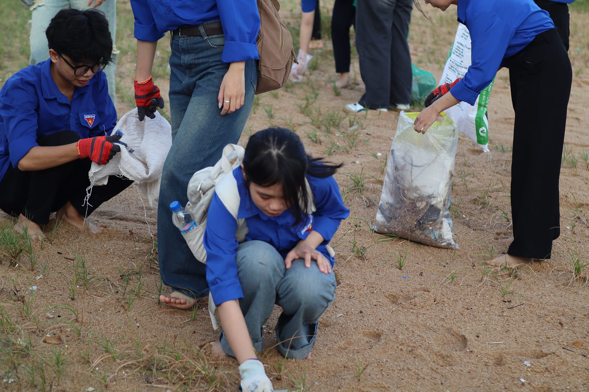
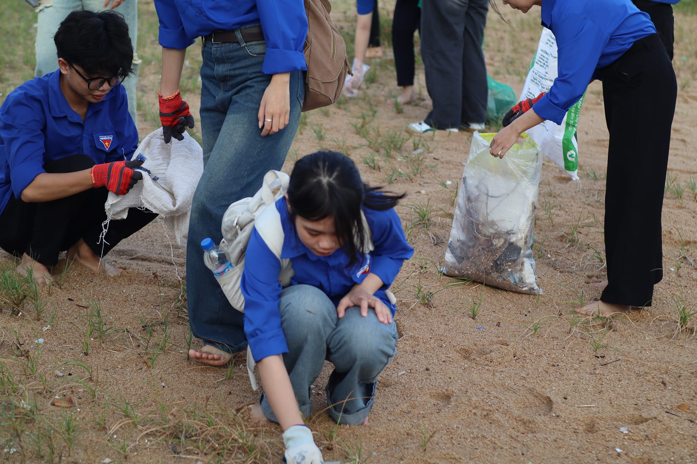

🌟 Giới thiệu
Câu lạc bộ hành trình nhân ái là thành phần của ngôi trường THPT Lê Trung Kiên , trường không chỉ giúp mỗi học sinh có tri thức mà còn giúp mỗi học sinh có nhân cách tốt đẹp hơn . Câu lạc bộ hành trình nhân ái được thành lập là nơi tập hợp những bạn trẻ có tấm lòng thiện nguyện, sẵn sàng giúp đỡ cộng đồng. Các bạn trẻ không ngần ngại mưa nắng , nhiệt huyết vì một môi trường xanh - sạch - đẹp . Vì mọi người, vì nhân dân, vì môi trường không bị ô nhiễm dẫn đến những hậu quả không lường . Các bạn trẻ đầy nhiệt huyết , sự quyết tâm không có gì có thể ngăn cản được .CLB Hành Trình Nhân Ái là nơi tập hợp những bạn trẻ có tấm lòng thiện nguyện, sẵn sàng giúp đỡ cộng đồng.
🎯 Hoạt động
CLB HÀNH TRÌNH NHÂN ÁI - 3/11/2024 💙
Với châm ngôn "Một ánh sáng trao đi, vạn tâm hồn hạnh phúc".
📍 Địa điểm: Làng Chài Phú Thọ - Đông Hòa - Phú Yên.
Các bạn tình nguyện viên từ gia đình Hành Trình Nhân Ái đã có trải nghiệm ý nghĩa khi tham gia dọn dẹp rác cùng cư dân địa phương. Mặc dù thời tiết có phần không thuận lợi lúc ban đầu, nhưng đến ngày làm việc thiện, thời tiết lại rất ưu ái giúp mọi người cùng nhau làm sạch bãi biển.

 

Vào ngày 20/10/2024 - Một Ngày Chủ Nhật Xanh Ý Nghĩa Tại Mũi Điện
Trong buổi sáng đầy nắng gió, các thành viên của CLB Hành Trình Nhân Ái đã cùng nhau tổ chức một ngày chủ nhật xanh tại Mũi Điện. Họ đã chung tay bảo vệ môi trường bằng cách dọn dẹp bãi biển và thu gom rác thải do du khách để lại.
Sau buổi dọn dẹp, mọi người cùng nhau thưởng thức bữa sáng nhẹ và ngắm bình minh, tạo nên không khí đoàn kết, sôi nổi và tràn đầy năng lượng.